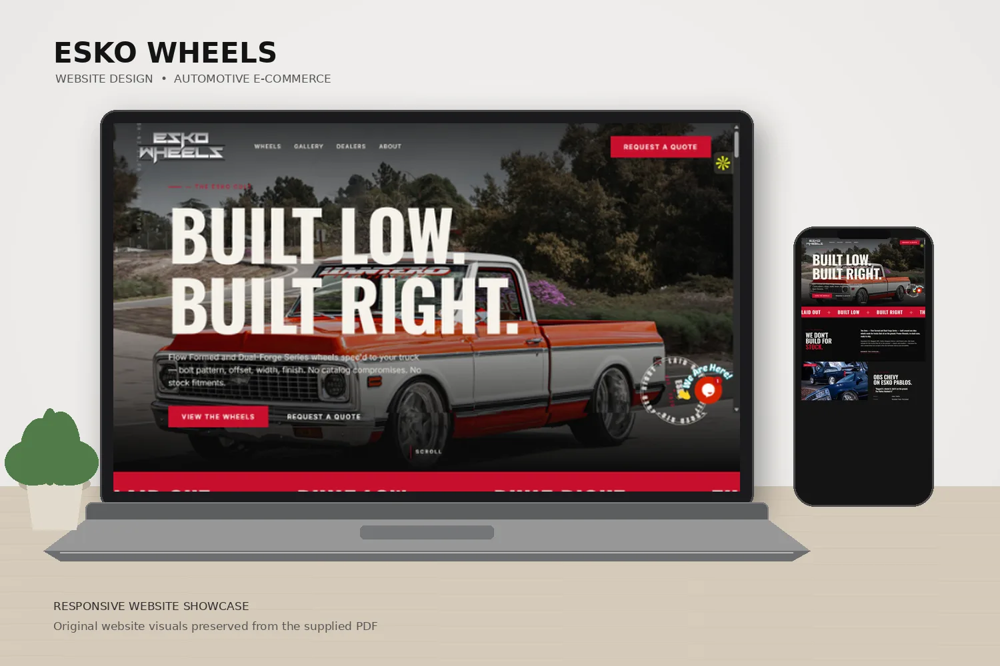
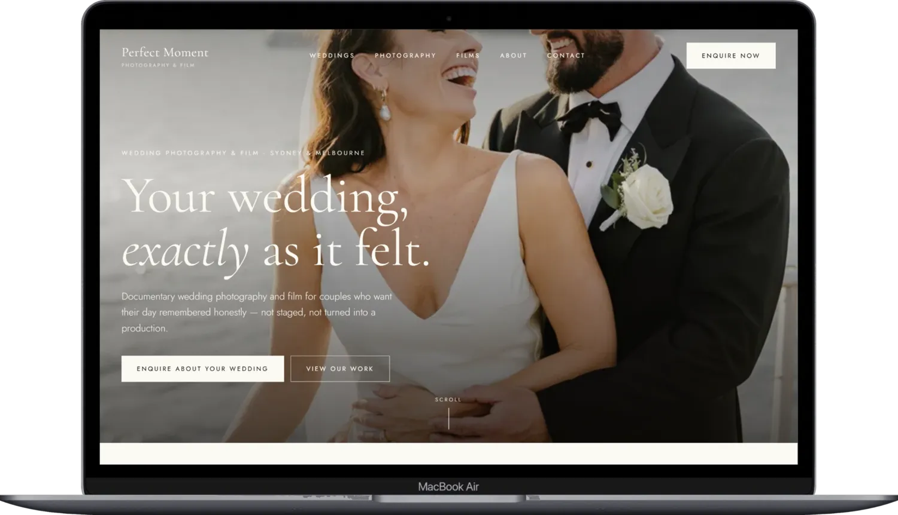
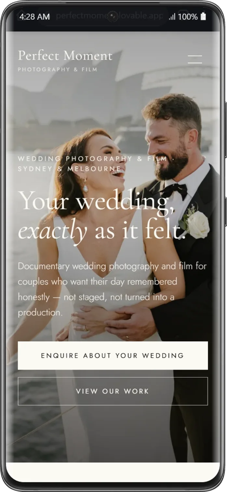
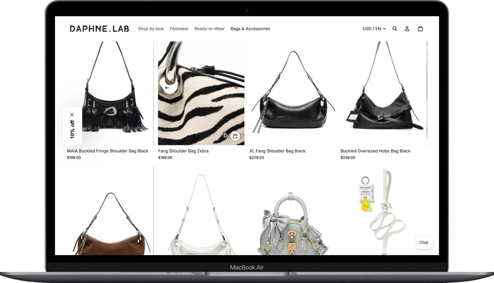
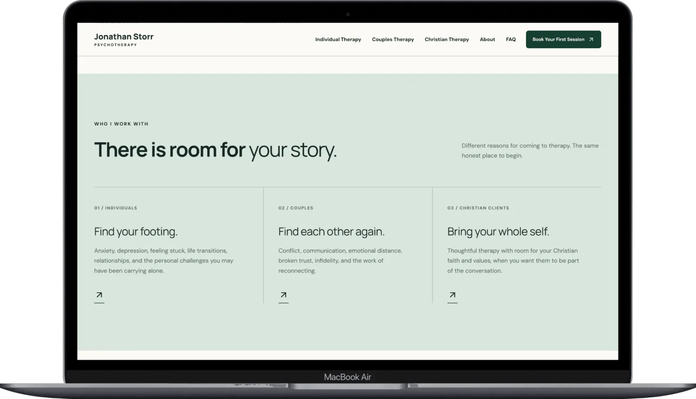

Website design


Automotive · E-commerce website
Two kinds of projects: website design in WordPress and Elementor, and full-stack development such as chatbots and custom tools. More samples are added as they become available.
Hover over a card to see another screen. Select a project to open a quick overview, then visit its dedicated page for the full case study.








Projects currently listed without screenshots. Visuals and detail views are added as more samples are provided.
Full-stack and AI-assisted builds: a website chatbot with Telegram handoff, plus four free tools that are live on this site.
More tools are planned: a WooCommerce catalog analyzer and an accessibility audit runner.
Send over what you’re working on and I’ll respond with the next step.